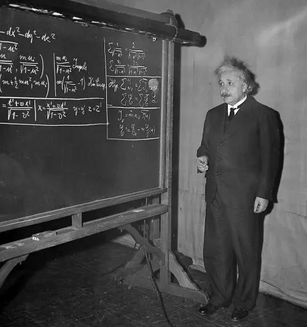

Elveția
Albert vrea să urmeze învățământul superior dar ratează examenul de admitere la Universitatea Politehnică elvețiană, în anul 1895, ETH (Eidgenössische Technische Hochschule), deși avea note excepționale la matematică și la fizică. Aceste rezultate au fost remarcate de unii profesori care i-au promis că va fi admis la facultate în următorul an, pe baza notelor obținute la examenul de maturitate. Familia îl trimite la Aarau, Elveția pentru a-și completa studiile liceale și pentru a-și lua diploma necesară.
Spre deosebire de atmosfera prusacă din școlile din Germania, la școala elvețiană, profesorii respectau personalitatea elevilor și stimulau libertatea de gândire. Pentru Einstein, anii petrecuți în Elveția au contribuit la socializarea și la exteriorizarea sa, deși avea un caracter introvertit și singuratic.
Aici ia contact cu teoria electromagnetică a lui Maxwell. Einstein începe să viseze și să se aprofundeze în teoriile sale, formulând una din primele sale întrebări teoretice:
„Cum ar fi dacă am putea să controlăm lumina și să călătorim prin intermediul acesteia?" La 17 ani, în anul 1896, după încheierea studiilor la Aarau, se înscrie la Universitatea Federală Politehnică (ETH) din Zürich care, deși era una dintre instituțiile de învățământ de elită din Europa și dispunea de unul dintre cele mai dotate laboratoare, l-au dezamăgit pe Einstein. Majoritatea profesorilor nu erau la curent cu noile descoperiri ale epocii și predau după vechile principii ale fizicii. Albert urmărea cursurile cu un interes scăzut, iar la orele de laborator citea reviste științifice, în care erau publicate cele mai recente descoperiri și teorii. Lipsea adesea de la ore, folosindu-și întregul timp pentru a studia fizica pe cont propriu sau pentru a cânta la vioară.
Mileva Marić, o colegă sârboaică de la ETH (singura femeie de acolo, studentă la matematici), atrage atenția lui Einstein și acesta se îndrăgostește de ea, în 1898. La 20 de ani (1899), Albert își încheie cea mai mare parte a studiilor și cercetărilor care vor sta la baza teoriilor sale. Einstein este absolvent al ETH, devenind profesor de matematică și fizică în anul 1900.[30] Totuși nu fusese un student prea strălucit, cel puțin din punctul de vedere al profesorilor care aveau o părere negativă despre Einstein (nu îi recomandaseră nici continuarea studiilor).